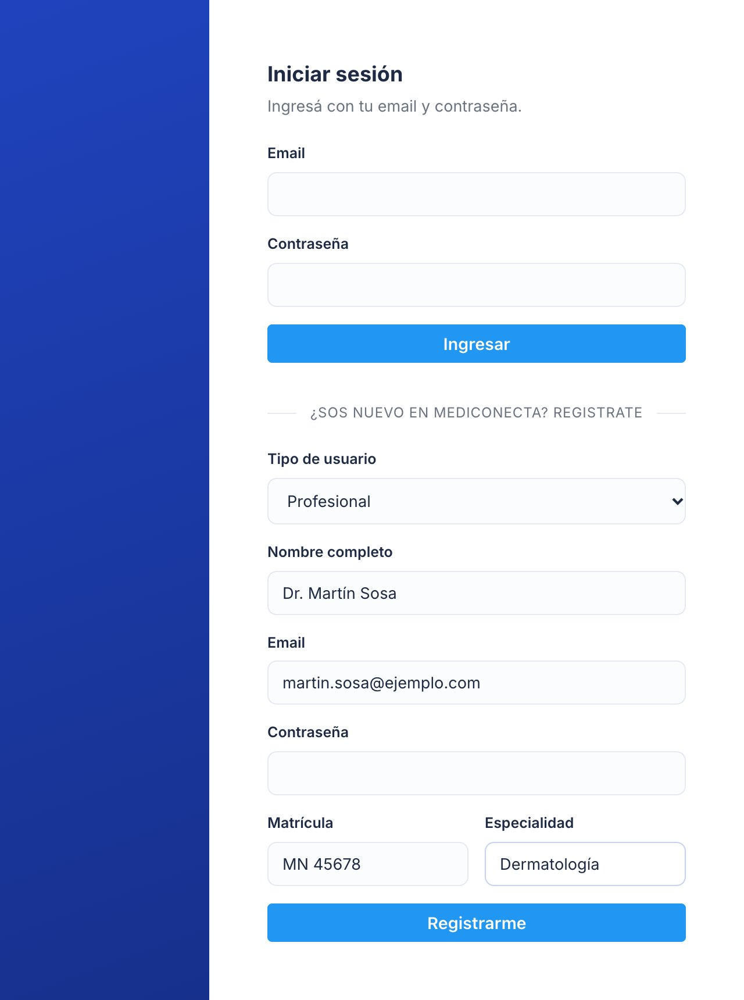
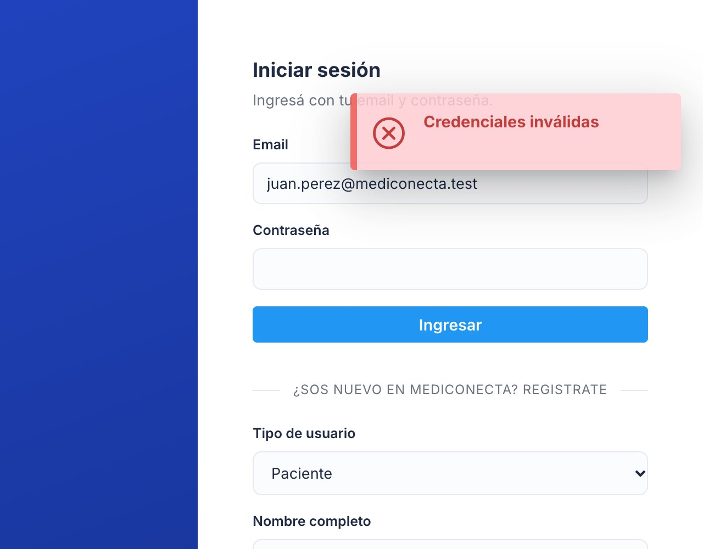
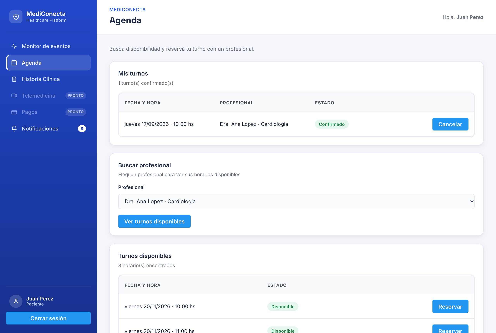
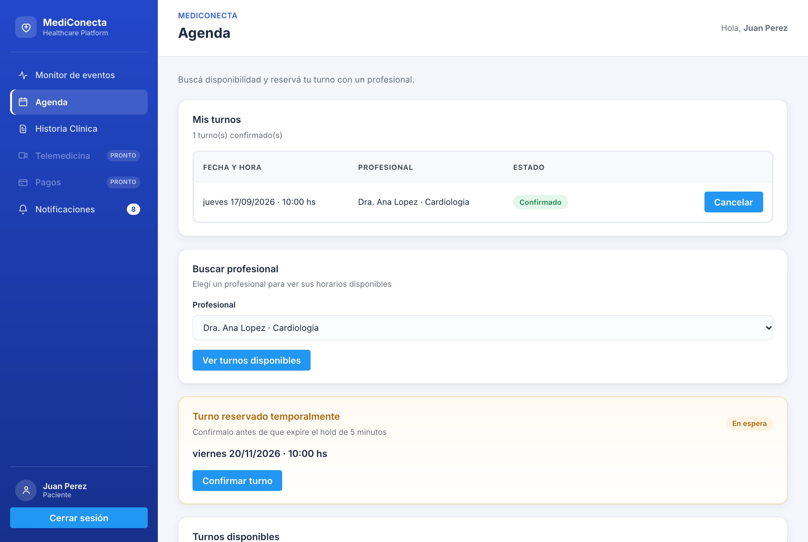
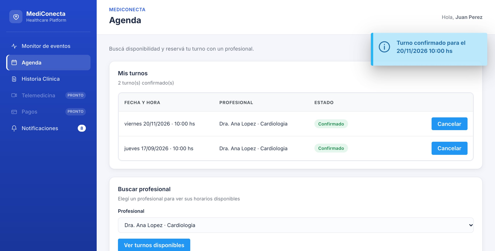
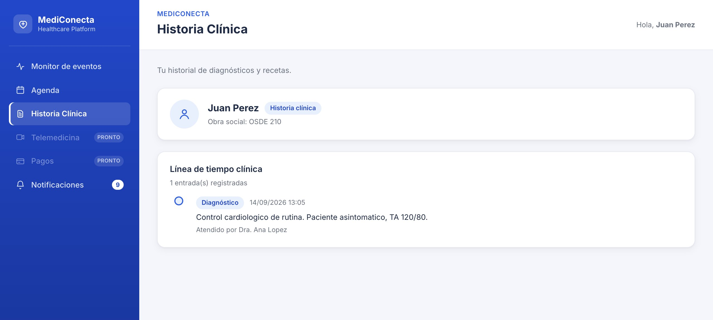
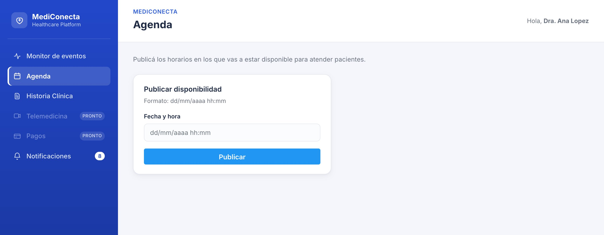
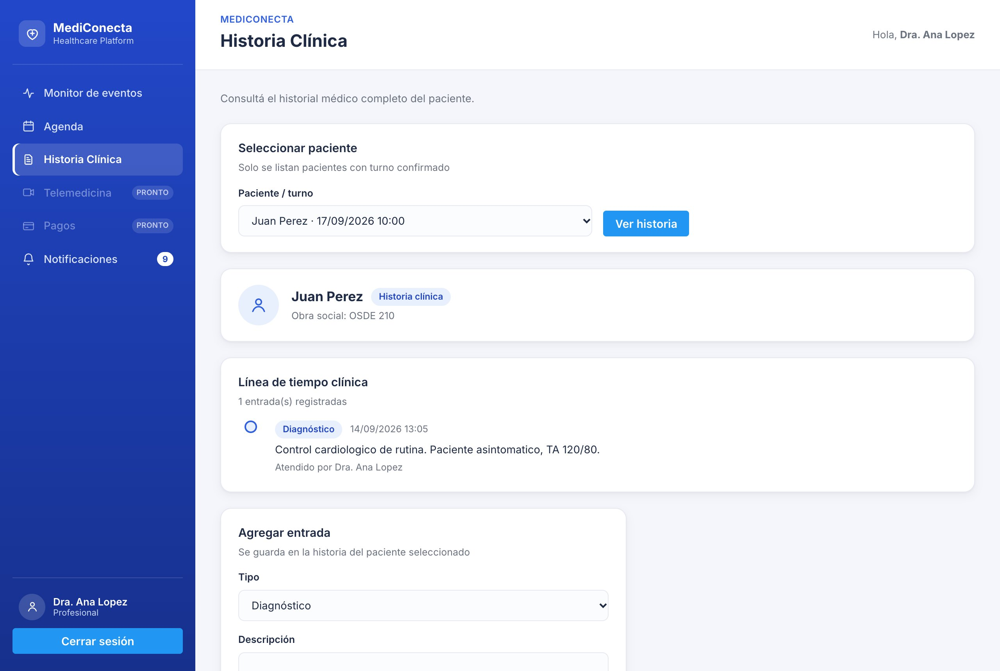
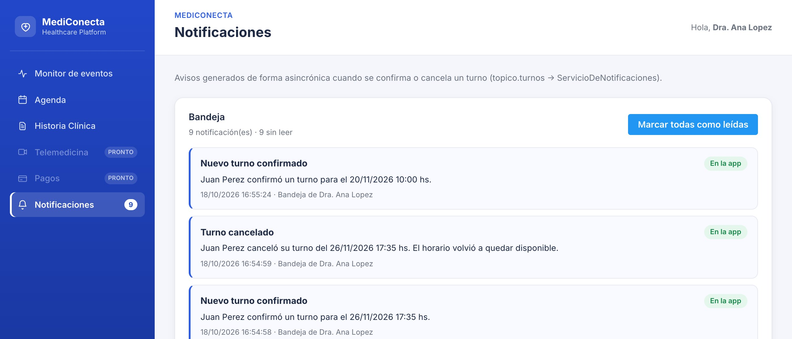
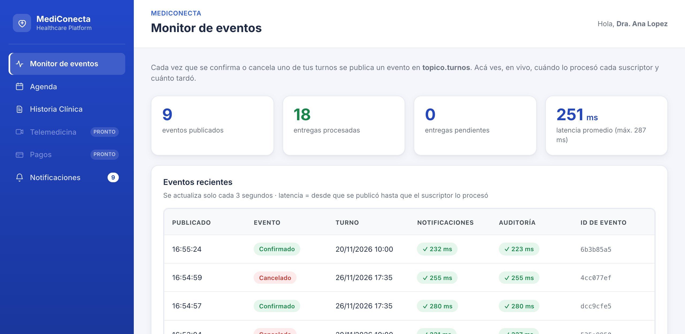

MediConecta junta en un mismo lugar a pacientes y profesionales de la salud. Si sos paciente, la usás para buscar un horario con tu médico, reservarlo y, si después no podés ir, cancelarlo para que lo aproveche otra persona. Si sos profesional, publicás los horarios en los que atendés y llevás la historia clínica de tus pacientes: diagnósticos y recetas, con fecha y firma.
No hace falta instalar nada. Alcanza con un navegador actualizado (Chrome, Firefox, Edge o Safari) en una computadora, una tablet o un celular. En pantallas chicas el menú de la izquierda pasa arriba y se desliza de costado, y las tablas anchas se pueden correr con el dedo.
El manual está ordenado según quién lo lea. Los dos primeros capítulos son para todos; después hay uno para pacientes y otro para profesionales, y al final un capítulo con las situaciones que más dudas generan. No hace falta leerlo de corrido: buscá lo que necesitás en el índice.
Para probarla.Si querés recorrer la aplicación sin crear cuentas, hay dos usuarios de demostración: el paciente juan.perez@mediconecta.test y la profesional ana.lopez@mediconecta.test. La contraseña de los dos es demo1234. Todos los ejemplos de este manual están hechos con ellos.
El registro está en la misma pantalla de inicio, debajo de donde dice “¿Sos nuevo en MediConecta? Registrate”. Lo primero que te pide es qué tipo de usuario sos, y eso importa: según lo que elijas, el formulario cambia. Un paciente carga su obra social; un profesional, su matrícula y su especialidad.

Ojo.Cada email se puede usar una sola vez. Si te dice que ya está registrado, probablemente ya tenés una cuenta: intentá entrar con ese email.
Para entrar, escribí tu email y tu contraseña en “Iniciar sesión” y tocá Ingresar. Si alguno de los dos está mal, aparece un cartel rojo que dice “Credenciales inválidas” y podés volver a intentar. Por seguridad, el cartel no te dice cuál de los dos datos falló.

Una vez adentro, a la izquierda tenés el menú con seis secciones: Monitor de eventos, Agenda, Historia Clínica, Telemedicina y Pagos, estas dos últimas todavía marcadas como “Pronto”, y Notificaciones. Al lado de Notificaciones aparece un número cuando tenés avisos sin leer. Abajo de todo están tu nombre, tu rol y el botón Cerrar sesión.
Un consejo.Si usás una computadora compartida (la de un consultorio, la de una biblioteca), cerrá siempre la sesión al terminar. Tu historia clínica es información sensible y nadie más debería poder verla.
Todo pasa en Agenda. En “Buscar profesional” elegí con quién te querés atender (cada profesional aparece con su especialidad) y tocá Ver turnos disponibles. Abajo se arma una lista con los horarios libres de ese profesional, del más próximo al más lejano. Solo aparecen horarios futuros.

Cuando encontrás uno que te sirve, tocá Reservar. En ese momento el horario queda retenido a tu nombre durante cinco minutos: nadie más lo puede tomar mientras decidís. Arriba de la lista aparece un recuadro naranja, “Turno reservado temporalmente”, con la fecha y la hora.

Para quedarte con el turno, tocá Confirmar turno. Vas a ver un cartel azul con la fecha confirmada, y el turno pasa a la tabla “Mis turnos”, arriba de todo. Listo: el profesional ya se enteró, sin que tengas que hacer nada más (en el capítulo 5 te contamos cómo).

Ojo con los cinco minutos.Si reservás y no confirmás a tiempo, el horario se libera solo y vuelve a la lista para cualquier paciente. No pasa nada malo: si todavía está libre, lo podés reservar de nuevo.
En “Mis turnos” cada turno confirmado tiene su botón Cancelar. Al tocarlo, el turno desaparece de tu lista y el horario vuelve a quedar disponible para que lo tome otro paciente. Al profesional le llega un aviso de que cancelaste.
Si lo que querés es cambiar el día, por ahora no hay un botón para reprogramar: cancelá el turno y reservá uno nuevo.
En Historia Clínica ves todo lo que tus profesionales cargaron sobre vos: diagnósticos y recetas, ordenados del más nuevo al más viejo, con la fecha y el nombre de quien te atendió. Es de solo lectura: no podés editarla vos, y ningún otro paciente puede verla.

Cuando entrás, la Agenda te muestra un único recuadro: “Publicar disponibilidad”. Escribí el día y la hora en el formato dd/mm/aaaa hh:mm, por ejemplo 20/11/2026 10:00, y tocá Publicar. Ese horario aparece enseguida en la lista de los pacientes que te busquen.

Cada horario se publica de a uno. Si atendés toda una mañana cada media hora, vas a tener que cargarlos uno por uno; es algo que queremos mejorar.
Entrá a Historia Clínica. Arriba, en “Seleccionar paciente”, aparecen los pacientes que tienen un turno confirmado con vos, con la fecha del turno. Elegí uno y tocá Ver historia.

Ojo.Las entradas no se pueden editar ni borrar una vez guardadas, igual que en una historia clínica en papel. Revisá el texto antes de tocar Guardar.
Cada vez que un turno se confirma o se cancela, MediConecta les avisa a las dos partes. Al paciente le arma un aviso por email y al profesional le deja un aviso dentro de la aplicación. Los dos aparecen en Notificaciones, con el número de avisos sin leer al lado del menú.

No hace falta recargar: la bandeja se actualiza sola cada pocos segundos. Cuando ya los leíste, tocá Marcar todas como leídas y el número del menú desaparece.
Sobre el email.En esta versión el correo todavía no sale a tu casilla: el aviso queda registrado y lo ves en la bandeja con la etiqueta “Email”. Conectar el envío real es uno de los próximos pasos.
El Monitor de eventos es la pantalla más técnica de la aplicación, pero vale la pena conocerla. Cada vez que uno de tus turnos se confirma o se cancela, el sistema genera un “evento” que procesan dos servicios por separado: el que arma las notificaciones y el que deja registro de cada cambio (la auditoría). El monitor te muestra, para cada evento, si cada servicio ya lo procesó y cuánto tardó, en milisegundos.

Lo normal es ver todo en verde, con un tilde y unos pocos cientos de milisegundos. Si alguno dice Pendiente, significa que ese servicio todavía no lo procesó, por ejemplo porque está detenido. El aviso no se pierde: queda guardado y se procesa en cuanto el servicio vuelve, y en ese momento el monitor pasa solo a verde. Solo ves los eventos de tus propios turnos.
| Turno disponible | Un horario que publicó un profesional y que nadie reservó todavía. |
| Reserva temporal (“En espera”) | Un turno retenido a tu nombre durante cinco minutos mientras decidís si lo confirmás. |
| Turno confirmado | Un turno que ya es tuyo. Lo ves en “Mis turnos” y el profesional ya recibió el aviso. |
| Entrada clínica | Cada diagnóstico o receta que un profesional carga en tu historia clínica. |
| Evento | El registro que genera el sistema cada vez que un turno se confirma o se cancela. A partir de él se arman los avisos. |
| Latencia | Cuánto tardó un servicio en procesar un evento, desde que se generó. Se mide en milisegundos (mil milisegundos son un segundo). |
MediConecta está en desarrollo, y preferimos decirte de entrada qué falta. Las secciones Telemedicina y Pagos del menú todavía no funcionan: están marcadas como “Pronto” y van a permitir hacer la consulta por video y pagar los turnos que no cubre tu obra social. Tampoco se valida todavía la cobertura con la obra social al reservar.
Faltan además algunas comodidades que ya tenemos anotadas: reprogramar un turno sin cancelarlo, recuperar la contraseña por email, publicar varios horarios de una vez y que el profesional vea en su agenda la lista de los turnos que le confirmaron.
Si encontrás algo que no funciona como dice este manual, o se te ocurre algo que te gustaría que haga, avisanos: este manual se actualiza junto con la aplicación.